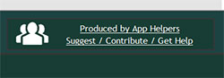

SnapBack is built upon the contributions by users like you. We need your help in order to continue to provide quick and easy solutions for millions of PC users. Your contribution can be large or small and come in any number of ways.
SnapBack seeks to deliver powerful point solutions but this is only possible with critical feedback from users. There are a number of valuable ways you can contribute to our apps. For existing apps, you can directly contribute by suggesting improvements, reporting bugs, and more. Each published app includes the "Suggest / Contribute / Get Help" link which goes to that app's "Connect" page on the SnapBack Factory. Once on the Factory, you can directly edit pages, leave comments, and submit forms all to ensure your voice is heard, your suggestions acknowledged, and your ideas addressed. The apps in SnapBack are constantly improved based upon the direct feedback of users.
Have a problem or issue with your PC that SnapBack doesn't already address? Not a problem! SnapBack can provide you a direct outlet to suggest a new app idea, vent your technology problems, and even build your very own app. Your new app contribution can be accomplished by one of three routes, ultimately dependent upon how much work you wish to contribute and how much time you want to invest. We welcome any and all recommendations and commitments.
The mission of SnapBack is to provide as many technology solutions to as many users as possible. In line with this philosophy, the vast majority of our apps are free to use so that as many people as possible can take advantage of them and reclaim their PCs. Additionally, it is our mission to provide as much clear and concise contextual information so that you are as well informed about a given app, technology frustration, or potential problem. This is why we don't pepper you with ads that you don't want to see or hawk expensive software solutions that are only available to a small segment of users.
However, we like to reward the many developers who create our amazing solutions and you can help to do so. See if there's a way from the below options that you can help give back to SnapBack and allow us to continue to deliver solutions PC users need.
One of the most effective and easiest ways to contribute to SnapBack is to shop online via one of our affiliate links. With each purchase you make after clicking on one of below links, SnapBack receives a percentage of the revenue.
You can also directly contribute a completely volunteer donation to SnapBack. We are extremely appreciative of all direct donations and ensure that this helps fund specific apps and solutions that our user community needs.
Note: All sales will be done by Columbia Data Products, publisher of SnapBack.